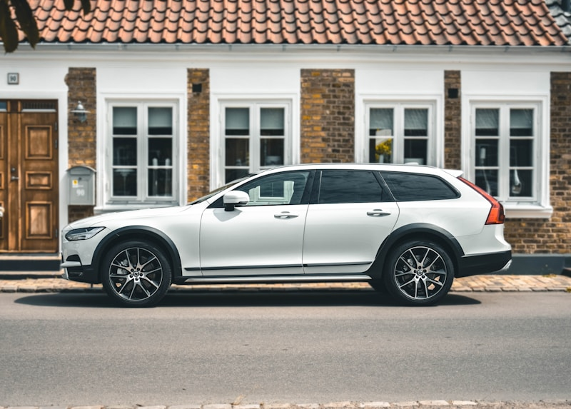

Volvo Repair & Service in Cedar Rapids
European-specialist care for every Volvo on the road.
Cedar Rapids' Volvo Specialist
Volvo built its reputation on safety, longevity, and Scandinavian engineering that does things differently from most automakers. At Cedar Automotive, we understand what sets Volvo apart. We carry dealer-level diagnostic software that communicates with Volvo's proprietary VIDA system, reads manufacturer-specific fault codes, and performs module programming that generic scan tools simply cannot handle. From the compact XC40 to the flagship XC90, your Volvo gets the specialist attention it deserves.
Volvo powertrains present unique service requirements. The Drive-E four-cylinder platform uses a combination of turbocharging and supercharging on T6 models, while T8 plug-in hybrids add an integrated starter-generator and rear electric motor. Older models run the legendary inline-five or turbocharged inline-six. Whether you need routine oil service with the correct VCC RBS0-2AE spec oil or a complex turbo replacement, we follow Volvo factory procedures using OE-quality parts.
Located at 1407 Adair Ct SW in Cedar Rapids, Cedar Automotive gives Volvo owners a genuine alternative to the dealership. You get specialist knowledge, dealer-level tooling, and honest pricing without the dealer markup. We service all Volvo models and years, and most appointments are completed the same day.
Volvo Services We Provide
- Full synthetic oil service following Volvo factory intervals
- Brake pad, rotor, and caliper service including electronic parking brake models
- AWD system service — Haldex and BorgWarner coupling, angle gear fluid
- Turbocharger and supercharger diagnostics, repair, and replacement
- Aisin automatic transmission fluid change and diagnostics
- Electrical diagnostics and Sensus infotainment troubleshooting
- Suspension service — strut mounts, control arms, Four-C active chassis
- Cooling system service — thermostat, water pump, radiator, coolant flush

Why Choose Cedar Automotive for Your Volvo?
Volvo-Specific Diagnostics
We use dealer-level diagnostic tools that interface with Volvo VIDA to read manufacturer fault codes, perform module resets, and run guided diagnostics that generic scanners miss entirely.
Warranty-Safe Service
We use OE-quality parts and follow Volvo factory service intervals. Under the Magnuson-Moss Warranty Act, your warranty stays fully intact when you service with us.
Honest, Transparent Pricing
No surprise charges. We explain what your Volvo needs, what it costs, and why — before any wrench turns. Dealership expertise without the dealership bill.
Common Volvo Issues We Repair
Every vehicle brand has its patterns. Here are the Volvo-specific issues we see and fix regularly at our Cedar Rapids shop.
Oil Trap & PCV System Failure
Volvo's positive crankcase ventilation system is a well-known weak point, particularly on the older five-cylinder engines (S60, V70, XC90 2.5T). A failed oil trap causes excessive oil consumption, smoke from the tailpipe, and rough running. We replace the entire PCV assembly with updated parts to prevent repeat failures.
Transmission Issues (Aisin)
Many Volvos use Aisin-Warner automatic transmissions that are generally reliable but develop valve body problems and harsh shifting if the fluid is neglected. The TF-80SC gearbox in models like the S60 and XC60 benefits from regular fluid changes every 60,000 miles. We perform complete fluid exchanges and diagnose solenoid and valve body faults.
Turbocharger Failures
The Drive-E platform's twin-charged T6 engine uses both a turbocharger and a supercharger, doubling the components that can wear. Common symptoms include boost leaks, wastegate rattle, and loss of power under acceleration. We diagnose boost system integrity, replace failed turbos, and address oil feed line restrictions that cause premature bearing failure.
Timing Belt & Chain Service
Older Volvo five-cylinder and six-cylinder engines use interference timing belts that must be replaced at the factory interval — a broken belt means catastrophic engine damage. Newer Drive-E four-cylinders use timing chains that can stretch over time, causing rattle on cold starts and eventual fault codes. We handle both belt replacements and chain tensioner repairs.
Electronic Module Failures
Volvos rely heavily on networked electronic modules — the CEM (Central Electronic Module), DEM (Driver Environment Module), and BCM (Brake Control Module) are common failure points. Symptoms range from intermittent warning lights and dead gauges to complete no-start conditions. We diagnose module communication faults and perform replacements with proper coding.
Suspension Strut Mount Wear
Volvo front strut mounts and upper spring seats wear out between 60,000 and 90,000 miles, causing clunking over bumps, poor steering response, and uneven tire wear. XC90 and XC60 models with heavier curb weights are particularly susceptible. We replace strut mounts, inspect control arm bushings, and restore proper alignment after suspension work.
Related Services
Frequently Asked Questions
Can an independent shop work on my Volvo without voiding the warranty?
Yes. Under the Magnuson-Moss Warranty Act, you are not required to use a dealership for routine maintenance or repairs. Cedar Automotive uses OE-quality parts and follows Volvo factory service intervals, so your warranty stays intact.
What Volvo models does Cedar Automotive service?
We service all Volvo models including the XC90, XC60, XC40, S60, S90, V60, V90, and the C40 Recharge. Whether your Volvo runs a turbocharged four-cylinder, the older inline-five, or a T8 plug-in hybrid powertrain, we have the diagnostic tools and expertise to handle it.
How often does my Volvo need an oil change?
Most modern Volvos call for a full synthetic oil change every 10,000 miles or 12 months, whichever comes first. However, severe driving conditions such as frequent short trips, extreme temperatures, or towing may require shorter intervals. We follow Volvo factory recommendations and help you stay on schedule.